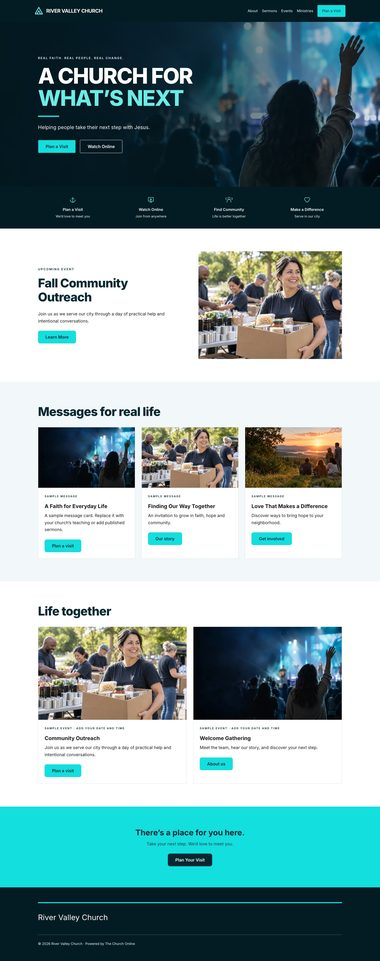
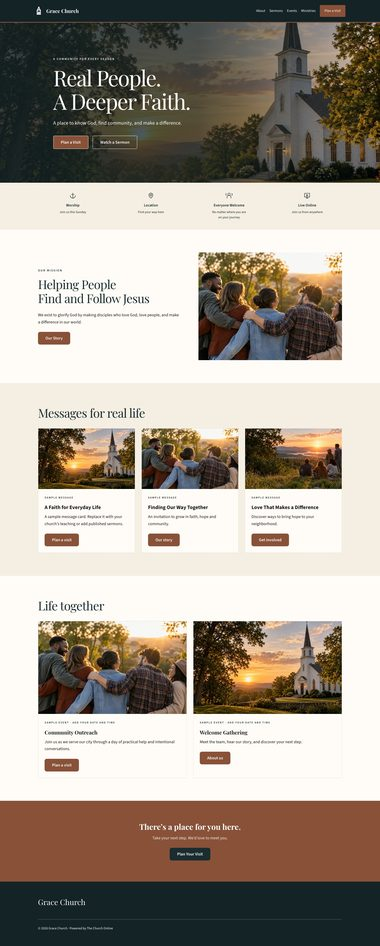
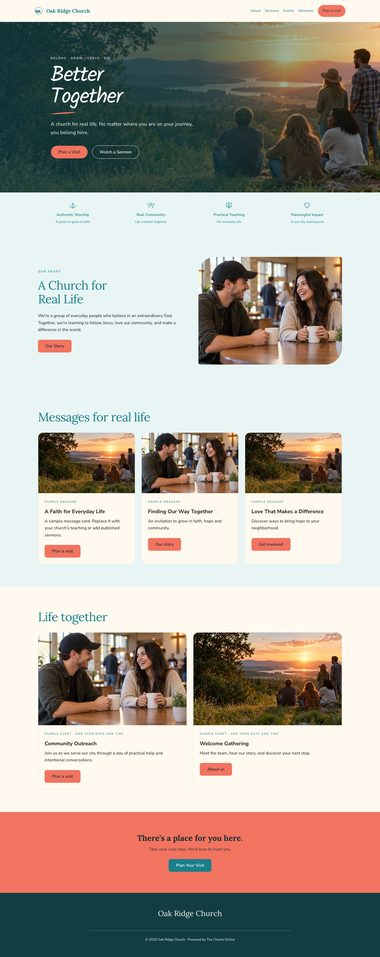
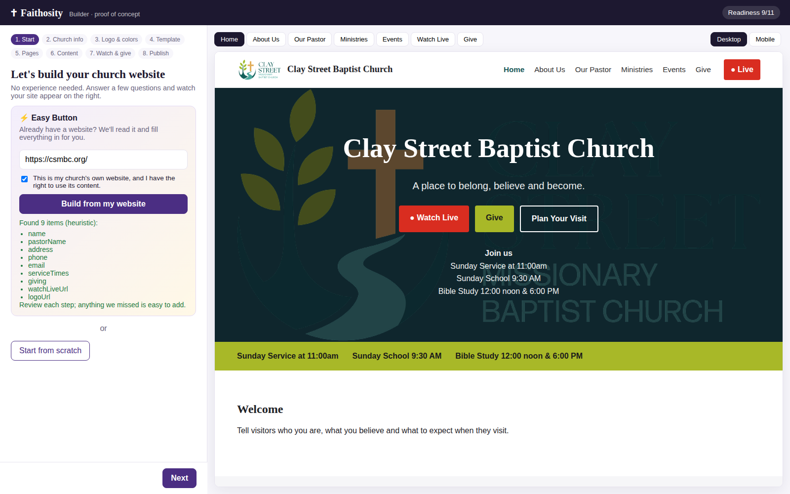
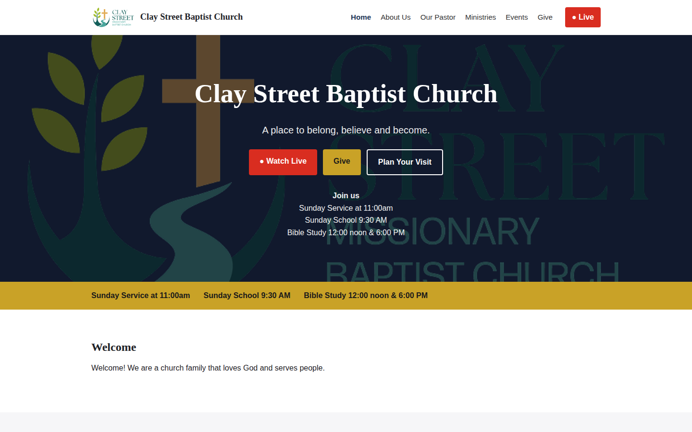
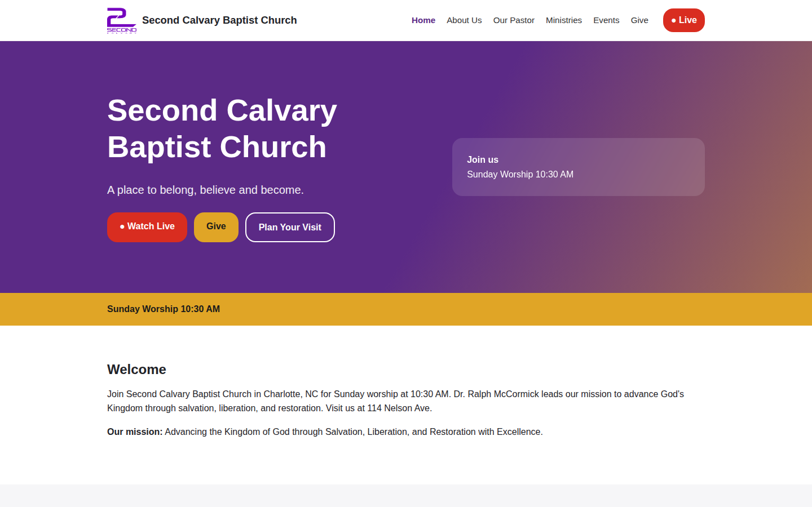
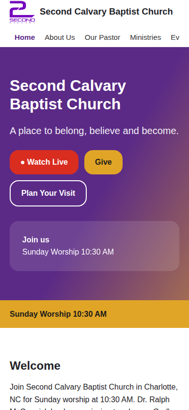
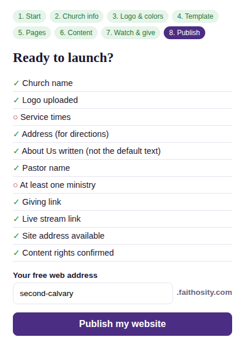
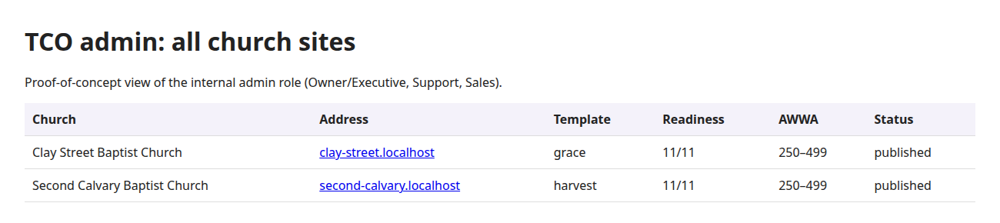

My individual assessment: user flows, architecture, phases, risks, team roles, and a working proof of concept
Ace King Mengote · Full Stack Developer
Technology & R&D · The Church Online · November 2, 2026
Each step answers one question leadership asked in the MVP review
What we build and why churches choose it
What a church sees, step by step
How the platform is put together on AWS
Foundations → alpha → beta → MVP launch
What could fail, and what I already tested
Who builds what, and how we work
Decisions needed from leadership
Easy Button tested on 4 real TCO client sites, plus the guided builder
A guided, AI-assisted builder that lets a small church launch a premium, church-themed website without hiring an agency.
Sign-up → published site in under 60 minutes
Most churches publish without a support ticket
AI cost tracked per church, within plan limits
Watch Live, service times, pastor, ministries and giving are built in, not plugins.
Questions and choices instead of panels and widgets.
Paste the current website address; the draft fills itself.
Faith-themed templates that look custom, not generic.
Evidence from 4 recent TCO builds: 2cal.org · thecentralbaptistchurch.org · rayofhope.org · csmbc.org
| Feature | Second Calvary | Central Baptist | Ray of Hope | Clay Street | MVP |
|---|---|---|---|---|---|
| Watch Live in hero and menu | ✓ | ✓ | ✓ | ✓ | Core |
| Service times near the top | – | ✓ | page | ✓ | Core |
| Event slider + full calendar | ✓ | ✓ | ✓ | ✓ | Core |
| Giving: outbound platforms | Givelify, Pushpay | Givelify | Online | Online | Core |
| Pastor section | ✓ | – | ✓ | ✓ | Core |
| Ministries list | groups | ✓ | ✓ | ✓ | Core |
| Prayer / contact forms | ✓ | ✓ | ✓ | ✓ | Phase II |
Takeaway: these blocks become the MVP content model. Every template renders the same blocks, so switching templates never loses content.



Always visible: a live preview (desktop / mobile) that updates as they type. Users can leave and return at any step.
All churches, revenue, AI and AWS cost dashboards
View as customer (audit-logged); issue credits with manager approval
See the sites they created and which became paid
Owner manages billing and invites Editors
Stripe Billing handles cards, retries and receipts; our webhooks drive the status.
Weekly emails (SES) until resolved; expiring-card warnings in advance.
Cancel keeps the site live until the paid month ends.
Credits and refunds are logged and need manager approval.
Broadcasts to all or tagged customers for maintenance notices.
Runs in a separate AWS account under TCO's organization · CloudWatch alarms and AWS Budgets send cost alerts and weekly usage reports
Not one Amplify app per church: per-app limits and cost would not scale to thousands of sites.
church.faithosity.com by default; CNAME their own domain (confirmed: a CNAME can't point to a folder).
Templates only change the look, so churches switch designs freely and AI fills one model.
Relational for accounts and billing; JSON columns for page blocks that vary by template.
Per-plan limits, cost tracking, moderation, and freedom to change AI providers.
Next.js + Node match the whole team's skills; one language for front and back end.
| Template section | Filled from | MVP feature |
|---|---|---|
| Header + Plan a Visit | Logo, name, chosen pages | Logo & pages steps |
| Hero | Tagline, photo, Watch Online link | Church info, AI copy, live stream |
| 4 quick links | Worship time, location, live, serve | Service times, directions |
| Featured block | Mission or next event | About / events |
| Messages (3 cards) | Latest sermons | YouTube playlist, sermon library |
| Life together (2 cards) | Upcoming events | Events + Google Calendar |
| Invitation band | "There's a place for you here" | Plan a visit |
| Footer | Address, social, credit | Directions link, social links |
heritage: {
font: "serif",
primary: "#895138",
surface: "#F5EFE3",
radius: 4
}Give, service times and pastor are on all 4 real TCO sites but not in these templates. Add them as optional sections.
Draft estimate for a 4-developer team, to refine together once we merge plans
Foundations
GitHub, CI/CD, staging
AWS account + Cognito
Multi-tenant + domain spike
Easy Button PoC → design
Internal
Guided wizard + live preview
Content model + 3 Sanctuary templates
Publish to subdomain
Basic TCO admin
10–20 churches
Stripe billing + lifecycle
AI content/images + limits
Easy Button v1, custom domains
Support chatbot, analytics, 4–6 templates
Public
Security + accessibility review
Load test, monitoring, alerts
Knowledge base + help
Launch with Faithosity.com
In parallel: the Faithosity.com landing page ships first (before the MVP), so marketing can collect sign-ups early.
| Risk | Impact | Mitigation |
|---|---|---|
| Easy Button quality varies by site | High | PoC done: heuristics + AI + user review; never auto-publish |
| Custom domains + SSL at scale | High | Phase 0 spike on CloudFront/ACM before committing |
| AI cost and misuse | Med | Per-plan limits, usage meter, moderation, budget alerts |
| Copying another church's site | Med | Ownership checkbox, report-abuse flow, audit trail |
| Facebook live embeds break weekly | Low | Link out to Facebook; YouTube channel embed is stable |
| Accessibility rules still unconfirmed | Med | Build WCAG AA into templates now; cheaper than retrofitting |
| Scope creep (giving, Prospect Studio) | Med | Design data model for them; build after MVP |

of key fields auto-filled (37 of 44) on 4 TCO client sites
per site, before any AI step
sites imported without errors
Found: name, pastor, address, phone, service times, Givelify / Pushpay, Watch Live, YouTube channel, logo
Learned: heuristics get most facts; AI fills gaps; the user always reviews

Grace template: Clay Street

Harvest template: Second Calvary
Published at clay-street.localhost and second-calvary.localhost from one server, using the same routing as church.faithosity.com
Colors from the logo and darkened until white text passes WCAG AA; uploads resized to WebP
Event graphics generated in church colors and exportable as 1080×1080 for social media

Mobile view


11 readiness checks block publishing until done. Second Calvary (left) is missing service times and ministries.
Admin view lists every church with template, readiness, AWWA and status.
Security basics: blocks imports of internal addresses (SSRF), escapes all content, limits request sizes.
Honest limits: no login, database or billing yet. Those are Phase 0 and Alpha work.
AWS account, multi-tenant hosting, domains and SSL, Cognito roles, Stripe billing design, CI/CD, security and code-review standards
Easy Button, AI content and images, usage metering, support chatbot; also front end
Guided wizard, live preview, templates as components, mobile and accessibility
APIs, data model, publishing, email (SES), analytics, admin features
Demo to leadership at the end
9:30 with James
Every change reviewed + tested in CI
Leadership sees features before release
Start from the 3 Sanctuary templates? Who designs the next 1–3 to reach 4–6?
Add Give, service times and pastor to the templates? Pick beta churches?
What can the AI give without a human: credits, refunds, limits?
Legal answer on WCAG for church sites, before templates are built
Design for TCO's own Stripe-based giving now, build after MVP?
GitHub org, AWS sub-account, AI dev tools, project tracker (Linear/Jira)
Thank you · Questions? · PoC: Documents/Projects/faithosity-poc